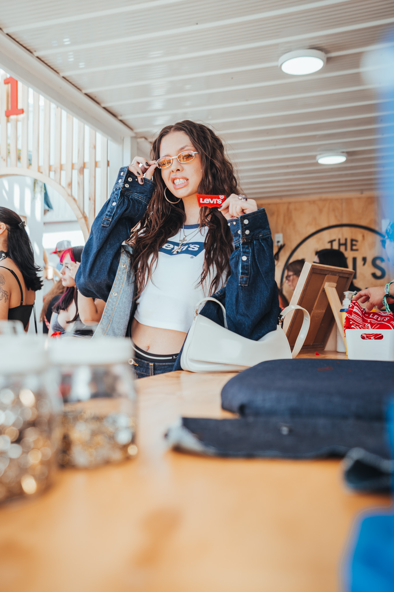
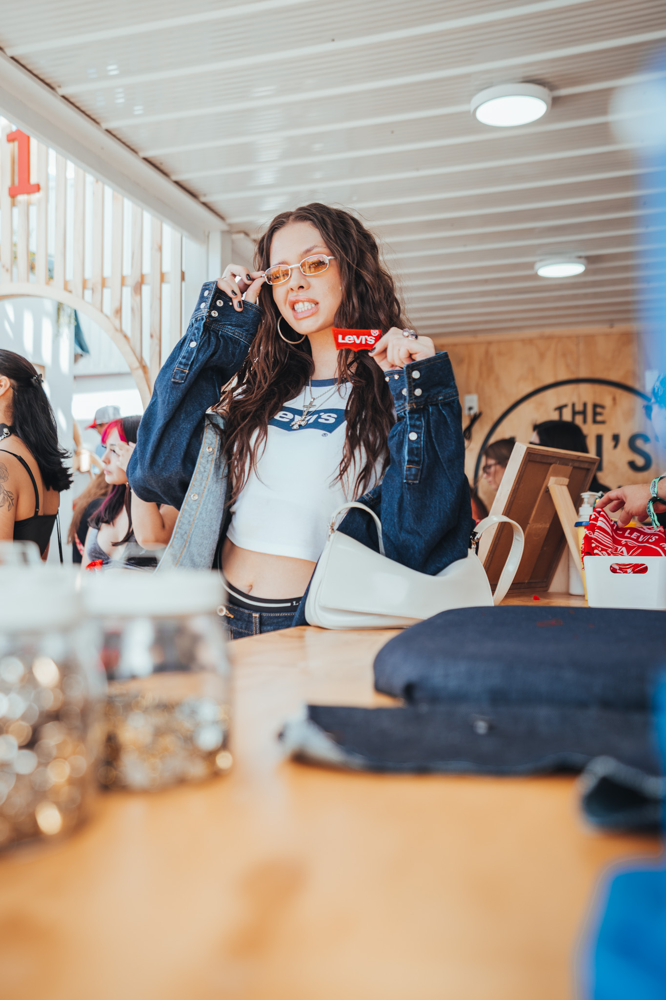
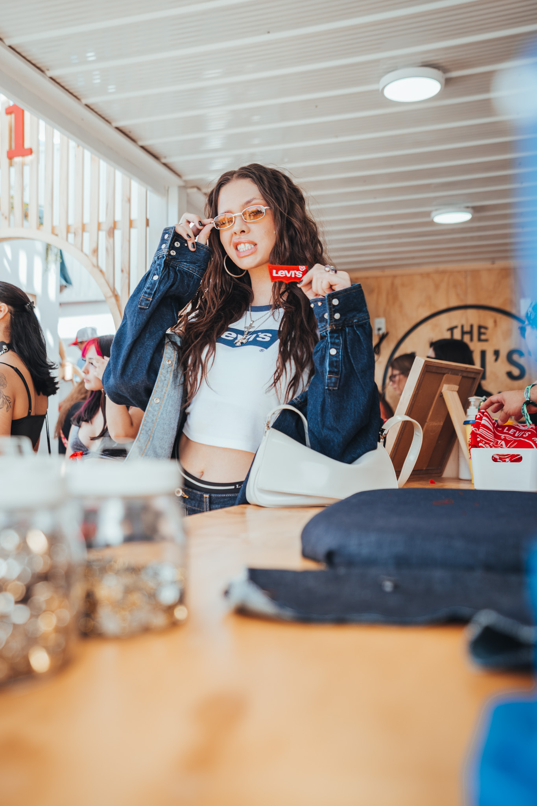

Proyectos Destacados


Adidas Standsmith


Becker
 

Levi's Lollapalooza
Adidas Standsmith
Becker

Levi's Lollapalooza

FUCO es una productora audiovisual fundada por una pareja de jóvenes profesionales dedicados al rubro audiovisual y publicitario. Nuestra combinación única de habilidades y pasión por lo que hacemos nos ha permitido desarrollar una diversa variedad de proyectos con un enfoque innovador para llevar emociones y mensajes poderosos a nuestros clientes. Cada proyecto es una oportunidad para desafiarnos y superar las expectativas, garantizando resultados excepcionales para quienes confían en nosotros. Como productora audiovisual, buscamos continuar creciendo y dejando huella en el mundo digital con nuestro trabajo en constante evolución.
Eventos, marcas, influencers, productos
Cápsulas en tiempo real, reels, video recap.